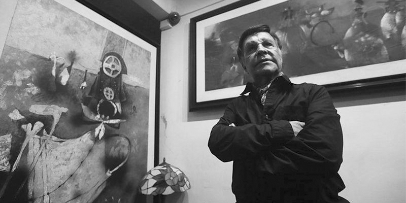
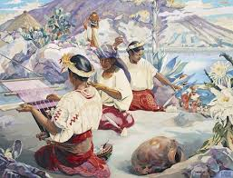
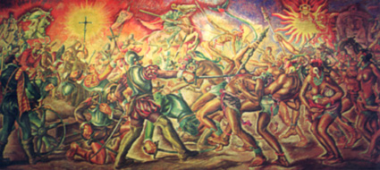
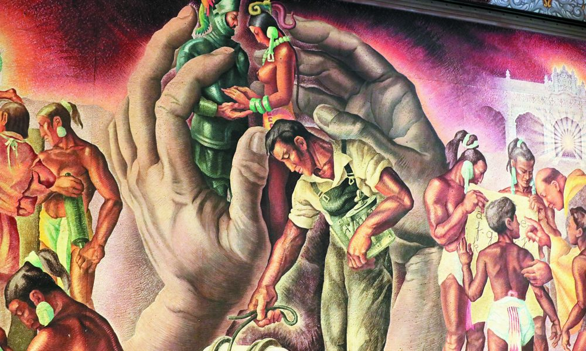

Alfredo Gálvez Suárez
Fue hijo del general Herculano Gálvez y Francisca Suárez de Gálvez.
Con su familia vivió en la ciudad capital de Guatemala desde principios del siglo XX.
Desde joven mostró tener habilidades artísticas, ya que a los 13 años realizó
una bella copia de una estampa de Bartolomé Esteban Murillo en un lienzo extenso.
Estudió en colegios privados y en el Instituto Central para Varones,
aprendiendo el arte plástico de forma autodidacta.
Aunque también tomó cursos con el pintor español Justo de Gandarias y el guatemalteco Agustín Iriarte.
Posteriormente, en 1923 viajó a México gracias a una beca otorgada por dicho país.
Además de ser parte del movimiento muralista en la época de José Clemente Orozco,
Diego Rivera y David Alfaro Siqueiros, también tuvo una comunicación
frecuente con Carlos Mérida, quien influenció su estilo.
Durante su vida se relacionó estrechamente con el pintor Humberto Garavito,
junto con quien plasmó paisajes y rasgos de las etnias indígenas
de la región occidental de Guatemala en sus lienzos.
Me gustaría que vieras algunas de las pinturas de Alfredo Gálvez Suárez ¡Son increíbles! ¿Te gustaría conoerlas?
Mujeres tejedoras de Atitlán
1,936Pabellón de Guatemala
1,933El mensaje
1,944